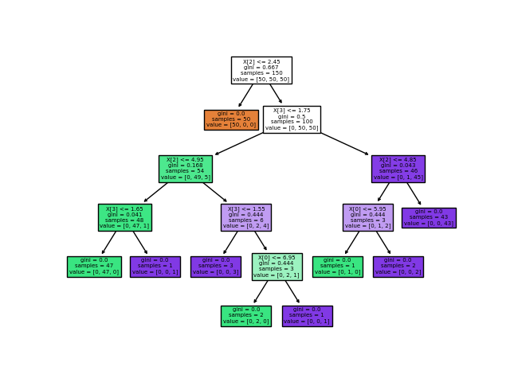

Nota
Haz clic aquí para descargar el código de ejemplo completo o para ejecutar este ejemplo en tu navegador a través de Binder
Trazar la superficie de decisión de un árbol de decisiones en el conjunto de datos iris¶
Trazar la superficie de decisión de un árbol de decisión entrenado en pares de características del conjunto de datos del iris.
Ver árbol de decisiones para más información sobre el estimador.
Para cada par de características de iris, el árbol de decisión aprende límites de decisión hechos de combinaciones de reglas de retención simples inferiores de las muestras de entrenamiento.
También mostramos la estructura del árbol de un modelo construido sobre todas las características.

- 
print(__doc__)
import numpy as np
import matplotlib.pyplot as plt
from sklearn.datasets import load_iris
from sklearn.tree import DecisionTreeClassifier, plot_tree
# Parameters
n_classes = 3
plot_colors = "ryb"
plot_step = 0.02
# Load data
iris = load_iris()
for pairidx, pair in enumerate([[0, 1], [0, 2], [0, 3],
[1, 2], [1, 3], [2, 3]]):
# We only take the two corresponding features
X = iris.data[:, pair]
y = iris.target
# Train
clf = DecisionTreeClassifier().fit(X, y)
# Plot the decision boundary
plt.subplot(2, 3, pairidx + 1)
x_min, x_max = X[:, 0].min() - 1, X[:, 0].max() + 1
y_min, y_max = X[:, 1].min() - 1, X[:, 1].max() + 1
xx, yy = np.meshgrid(np.arange(x_min, x_max, plot_step),
np.arange(y_min, y_max, plot_step))
plt.tight_layout(h_pad=0.5, w_pad=0.5, pad=2.5)
Z = clf.predict(np.c_[xx.ravel(), yy.ravel()])
Z = Z.reshape(xx.shape)
cs = plt.contourf(xx, yy, Z, cmap=plt.cm.RdYlBu)
plt.xlabel(iris.feature_names[pair[0]])
plt.ylabel(iris.feature_names[pair[1]])
# Plot the training points
for i, color in zip(range(n_classes), plot_colors):
idx = np.where(y == i)
plt.scatter(X[idx, 0], X[idx, 1], c=color, label=iris.target_names[i],
cmap=plt.cm.RdYlBu, edgecolor='black', s=15)
plt.suptitle("Decision surface of a decision tree using paired features")
plt.legend(loc='lower right', borderpad=0, handletextpad=0)
plt.axis("tight")
plt.figure()
clf = DecisionTreeClassifier().fit(iris.data, iris.target)
plot_tree(clf, filled=True)
plt.show()
Tiempo total de ejecución del script: (0 minutos 1.569 segundos)